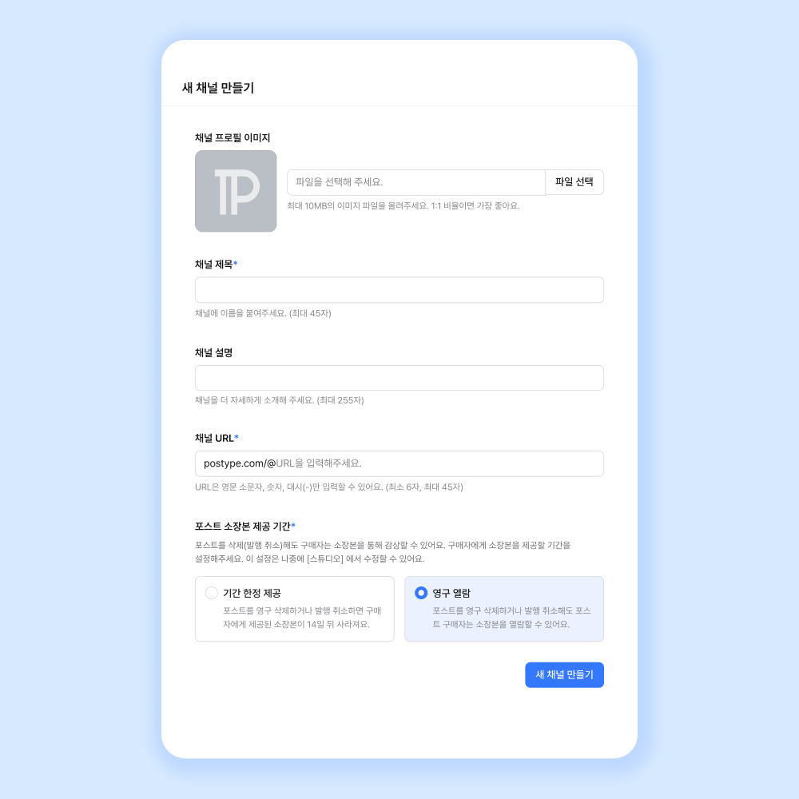

POSTYPE 的"反平台"设计哲学：为什么它要把创作者经济拆回一对一
韩国创作者经济平台 POSTYPE 用 Request 定制、隐藏文字、投票等功能，把传统平台的流量分发逻辑扭转为创作者与粉丝的双向契约。本文拆解其积分结算、统一费率、实时沟通等底层机制，判断这套设计的适用边界。
一个反常识的问题：为什么 POSTYPE 不做大流量分发？
当 Patreon 在做"Discover"推荐算法、OnlyFans 在给头部创作者砸流量补贴的时候，postype官网走了一条完全相反的路——它把核心资源倾斜给了 Request 定制、隐藏文字、投票这些"小而密"的功能。一个靠"粉丝主动找上门、一对一沟通"为核心变现链路的平台，怎么能在创作者经济赛道站住脚？
这背后不是某个拍脑袋的产品决策，而是一整套关于创作者与粉丝关系的重新定义。
拆解一：积分系统为什么不直接用韩元
POSTYPE 内部用 Points 结算，1 Point 约等于 1 韩元。充值时韩元换成 Points，提现时 Points 再换回韩元，中间还可能有微小的汇率浮动——具体的汇率和结算规则在文档里有完整说明。看起来多此一举的设计，实际上是给整个变现链路套了一层缓冲垫。
这个机制解决了三个问题。第一，价格抽象化。当一个 Request 的预算是"50,000 ~ 100,000 Points"而不是"45美元到90美元"时，粉丝和创作者对价格的敏感度都会降低——毕竟没有人会实时换算 Points 和韩元的精确比值。这种"货币幻觉"在付费帖子和会员订阅上同样有效。第二，跨市场兼容。POSTYPE 主要服务韩国市场，但积分系统让它理论上可以接入任何货币，不需要对每一种法币做独立的定价和风控逻辑。第三，平台费的隐性化。四类收入统一扣除 10% 平台费，这个数字从创作者视角看是"我的收益扣掉 10%"，但从粉丝视角看是"我花的 Points 有一部分被平台拿走了"。积分系统让双方都只关注自己看到的那个数字，减少摩擦。
这种积分设计在游戏平台和直播平台已经被验证过无数次，但移植到创作者经济平台，POSTYPE 是为数不多做得干净的——没有多档积分、没有充值返利诱导、Points 和韩元的兑换比始终固定。
拆解二：统一 10% 费率为什么不做阶梯
创作者经济平台的常规操作是：头部创作者费率低（5%~8%）、中腰部费率中（10%~12%）、新人费率高（15%~20%）。这样既留住了头部，又从新人身上多赚。POSTYPE 反其道而行——所有创作者四类收入（付费帖子、会员订阅、赞助、Request 定制）统一扣除 10% 平台费，没有阶梯费率，没有头部激励计划。
这个设计背后的逻辑很简单：POSTYPE 不靠流量分发赚钱，它靠"交易撮合"赚钱。Request 定制是一对一的交易撮合，付费帖子和会员订阅是标准化的内容交易撮合。撮合的成本对于头部和新人是一样的——都是维护一个交易通道、一套支付系统、一份结算记录。既然后端成本没有显著差异，前端费率就没有理由差异化。
更关键的是，统一费率传递了一个信号：POSTYPE 不扶持头部。在它的产品设计里，Discovery 推荐的权重更偏向"内容新鲜度"和"互动率"，而不是"粉丝基数"。投票功能（3.84.0 版本新增，最多 5 个选项）让创作者可以直接问粉丝"下一章写什么"，Request 功能让粉丝直接发起定制委托——想试试这套工作流的下载就能在 Studio 里体验。这些功能的效果，一个 1000 粉的新人创作者和一个 10 万粉的头部创作者，理论上没有本质区别。

拆解三：Request 为什么要用实时聊天而不是表单
Request 定制是 POSTYPE 的核心差异化功能，也是它区别于 Patreon、OnlyFans 的关键一刀。粉丝发起 Request 时要提交"想要什么"、"预算范围"、"期望交付时间"，这看起来和 Upwork、Fiverr 的需求表单没什么不同。但创作者接受 Request 之后，POSTYPE 没有让系统自动推进流程，而是开启了一个专门的实时聊天面板——和普通私信隔离、自动保存上下文、支持发送图片文件。
为什么不让表单走完流程？因为 Request 的本质不是"接单"，而是"契约"。粉丝写"帮我画一张 K-pop 偶像的同人图"的时候，他脑子里想的是"偏治愈风、不要太性感、背景是海边"。创作者看到这句话的时候，他需要知道具体是哪支偶像、画风参考什么、要不要画成 PNG 源文件。这些细节的传递效率，用聊天比用表单高一个数量级。而且，实时聊天本身就是一种信任构建。创作者和粉丝在聊的不是冷冰冰的需求参数，而是"我想要什么"和"我能给你什么"的双向确认。这比任何自动化流程都更能减少交付纠纷。
隐藏文字功能也是同理——它不是"付费墙"，而是"互动钩子"。把一段内容折叠起来，读者点击才能展开，这个动作本身就是在让读者"决定要不要深入"。付费帖子用可见性框做付费墙，免费帖子用隐藏文字做彩蛋，两个功能在 POSTYPE 里严格区分，各自服务不同的用户心理。
这套设计的代价和边界
说到这里你大概也能猜到了——POSTYPE 的反平台设计不是没有代价。
第一，它不适合做大规模工业化内容。如果你的内容策略是"批量生产标准化教程、靠 Discovery 流量分发起量"，POSTYPE 不是好选择。Request 功能每个订单都要单独沟通，时间成本很高；投票功能虽然能帮你收集内容方向，但收集完还是要自己一篇篇写。它适合的是"少而精"的创作者——插画师、同人作者、翻译、占卜师、小众领域的写作者，这些人靠粉丝粘性吃饭，不靠平台流量吃饭。
第二，海外用户的体验是半残的。POSTYPE 主要服务韩国市场，海外居民的提现方式没有 Payoneer、PayPal、Wise 这些国际渠道，税务问题也需要自己咨询专业人士。平台在帮助中心里对海外用户的建议基本是"以官方最新政策为准"，说明这块业务还在观望。
第三，纠纷处理的透明度有限。Request 定制如果粉丝反悔或失联，POSTYPE 的规则是"创作者可以保留已收到的预付金额"，但具体怎么判定、有没有申诉渠道，帮助中心里没有给出明确的流程图。聊天记录保存了，但平台会不会主动介入纠纷、介入的标准是什么，这些都还是灰色地带。
最后怎么判断：POSTYPE 的定位是什么
如果用一句话总结：POSTYPE 是创作者经济平台里的"手作市集"。
亚马逊是工业化大卖场，Patreon 是会员制订阅俱乐部，OnlyFans 是流量驱动的内容超市——POSTYPE 不做这些。它做的是：给每一个创作者搭一个小摊位，让粉丝直接找到你、跟你聊需求、给你付钱、跟你讨价还价。平台提供的是交易通道、支付系统、基础的流量推荐，但不替你做分发决策。
这套定位意味着它在两个场景下特别有用：一是你已经有稳定的粉丝群，想把变现方式从纯内容扩展到一对一服务；二是你想测试"粉丝愿意为你的定制能力付多少钱"，而不想一开始就做会员制的重承诺。
但如果你还在冷启动阶段、没有粉丝基础，或者你的目标是做成头部内容 IP——POSTYPE 可能不是最高效的选择。它的设计哲学里没有"帮你涨粉"这回事，它只帮你"把已有的粉丝关系变现"。